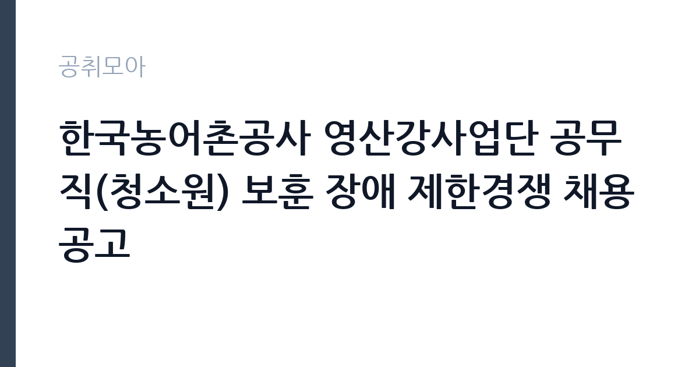

[공공기관] 한국농어촌공사 영산강사업단 공무직(청소원) 보훈 장애 제한경쟁 채용공고
한국농어촌공사 · 전남 · 마감 2026-11-20 (D-16) · 출처 나라일터

한눈에 보는 모집 조건
| 기관 | 한국농어촌공사 |
|---|---|
| 공고명 | 한국농어촌공사 영산강사업단 공무직(청소원) 보훈 장애 제한경쟁 채용공고 |
| 고용형태 | 공무직 |
| 근무지 | 전남 |
| 게시일 | 2026-11-05 |
| 마감일 | 2026-11-20 (D-16) |
지원자격, 이렇게 읽으세요
- 공무직 1명
- 접수 ~2026-11-20 마감
- 세부 조건은 원문 공고문 확인
공무직 근로자는 공무원이 아니라 근로기준법이 적용되는 근로자이지만 기간의 정함이 없는 무기계약으로 채용되는 경우가 많아 정년까지 근무가 가능합니다. 채용은 공무원 시험과 달리 기관의 자체 전형으로 진행되고 인사 규정과 임금표를 적용받습니다. 이번 공고는 한국농어촌공사가 직접 진행하는 자체 전형입니다. 국책사업 전담 인력은 관련 사업 운영 경력과 행정 실무 능력을 함께 봅니다. 계약직이나 기간제로 채용되는 경우가 많아 사업 기간과 재계약 조건을 먼저 확인해야 합니다. 예산 집행과 정산 경험, 보고서 작성 능력이 실질적인 평가 기준입니다. 사업 분야에 대한 이해도 요구되므로 지원 전에 사업 개요와 연차별 목표를 읽어 두어야 합니다. 응시 자격 판단이 애매하면 접수 전에 채용 담당 부서로 문의하는 편이 안전합니다. 공고문의 응시자격 표를 보면 자격 항목이 여러 줄로 나뉘어 있으므로, 각 줄을 하나씩 체크하며 본인 해당 여부를 표시해 두면 누락을 줄일 수 있습니다. 우대 사항에 해당하면 증빙을 반드시 첨부해야 하며, 누락하면 가점 없이 평가됩니다.
이 공고의 포인트
이 건은 한국농어촌공사가 같은 시기에 낸 3개 모집분야 가운데 국책사업 전담 직무입니다. 다른 직무 공고와 요건이 다르므로 지원 전에 모집분야 표를 대조해야 합니다. 이 공고의 첫 번째 포인트는 고용 형태입니다. 무기계약으로 채용되면 정년까지 근무가 가능해 재계약 부담이 없습니다. 반대로 기간제로 채용되는 공고라면 계약 기간을 먼저 확인해야 합니다. 두 번째는 업무 범위가 명확하다는 점입니다. 국책사업 전담 직무로 채용되므로 배치 이후 담당 업무가 크게 흔들리지 않습니다. 세 번째는 근무지입니다. 전남 지역 근무로 수도권 공고에 비해 지원자 분포가 넓지 않아 상대적으로 경쟁이 분산되는 경우가 있습니다. 공고가 올라온 지 얼마 되지 않아 아직 지원자 수가 많지 않을 가능성이 있습니다. 다만 선발 인원이 1명으로 많지 않아 자격을 갖춘 지원자가 몰리면 경쟁률이 높아질 수 있습니다.
전형은 어떻게 진행되나
서류전형과 면접전형 외에 직무수행능력 평가가 붙는 경우가 있습니다. 평가 방식은 공고문에 구체적으로 적혀 있으므로 어떤 항목에 배점이 높은지 먼저 파악하십시오. 면접에서는 지원 동기보다 실제 업무 경험에 대한 질문이 많고, 답변의 구체성이 평가를 가릅니다. 전형 일정은 서류 마감 이후 빠르게 진행되므로 연락 가능한 번호를 정확히 기재하고 문자와 메일을 수시로 확인해야 합니다. 최종 단계에서는 결격사유 조회와 신체검사가 진행됩니다. 자격증 취득 예정자로 지원했다면 취득 증명 제출 기한을 반드시 지켜야 합니다.
원문에서 확인한 전형 방식
○ 모집분야 : 청소원 ○ 선발직급 : 공무직 ○ 고용형태 : 정규직 ○ 자격요건 : ◦학력, 전공, 성별, 연령 제한 없음(단, 정년에 도달하지 아니한 자) ◦「국가유공자 등 예우 및 지원에 관한 법률」등 관계법령에 따른 취업지원대상자 또는 「장애인고용촉진 및 직업재활법」에 따른 장애인만 가능 ◦임용예정일(2027.1.1.)부터 즉시 업무종사 가능자 ◦남자의 경우, 병역법 제76조에서 정한 병역의무 불이행 사실이 없는 자 ◦공사 인사규정 제9조의 임용 결격 사유가 없는 자(첨부 1) ◦근무지로 출퇴근 가능자(통근버스 미제공) ○ 접수기간 : 2026년11월05일 ~ 2026년11월20일 ○ 응시방법 : 온라인 지원페이지를 통한 접수(https://recruit.incruit.com/ekr) ○ 문의처 : 061-270-6473
이런 분께 추천해요
- 국책사업 운영이나 정산 실무 경험이 있는 분
- 유관 기관과 협의를 이끌어본 경험이 있는 분
- 사업 기간 내 성과 목표를 관리할 수 있는 분
지원 전 체크리스트
- 응시자격 요건과 경력 기준을 충족하는가 — 경력은 증명서로 입증해야 합니다
- 무기계약 여부와 정년 기준을 공고문에서 확인했는가
- 제출서류 목록을 모두 준비했는가 — 누락 시 서류 단계에서 탈락합니다
- 접수 마감 2026-11-20 이전에 접수 방식을 확인해 제출했는가
모집 일정과 제출 타이밍
공고 게시일은 2026-11-05, 접수 마감은 2026-11-20입니다. 준비 기간은 약 15일로 서류 준비와 자격 증빙을 함께 처리하기에는 넉넉하지 않은 편입니다. 첫 이틀 안에 공고문과 첨부 서식을 내려받아 요건을 확인하고 남은 기간에 증빙 서류를 발급받는 일정이 현실적입니다. 면접은 서류 합격자 발표 후 짧은 간격으로 진행되는 경우가 많으므로 서류 제출과 동시에 면접 준비를 시작하는 편이 안전합니다. 마감일에는 접수 시스템이 몰리므로 하루 전까지 제출을 마치는 것이 좋습니다. 제출 서류는 공고문에 적힌 순서대로 정리하면 담당자가 확인하기 쉬워 누락이 줄어듭니다.
직무 이해하기: 공공기관
공공기관은 도로와 수자원, 농지, 부동산 시장 관리 같은 공적 기능을 수행합니다. 현장 사업소는 도로와 시설 유지 관리, 조경과 환경 관리 업무를 직접 수행하며 계절 사업에 따라 기간제 인력을 채용합니다. 국책사업 전담 인력은 정부 지원 사업의 계획 수립과 집행, 성과 관리를 맡습니다. 사업 참여 기관과 기업을 발굴해 협약을 체결하고, 참여자 모집과 교육 과정 운영을 조정합니다. 사업비 집행과 정산, 실적 증빙 관리가 업무의 큰 부분을 차지하고, 정부 부처와 지자체에 보고 자료를 제출합니다. 사업 기간이 정해져 있어 연차별 목표를 달성해야 하고, 중간 평가와 최종 평가를 준비해야 합니다. 대학이나 공공기관의 사업단에 배치되어 기존 행정 조직과 협업하는 구조가 일반적입니다. 이 직무는 담당 구역이 정해져 있어 근무지에 따라 실제 업무 환경이 달라집니다. 현장 업무와 사무 업무의 비중은 기관의 사업 일정에 따라 계절별로 달라집니다. 원문에 '모집분야 : 청소원 ○ 선발직급 : 공무직 ○ 고용형태 : 정규직 ○ 자격요건 : ◦학력, 전공, 성별, 연령 제한 없음(단, 정년에 도달하지 아니한 자) ◦「국가'라는 조건이 명시되어 있습니다.
자기소개서 작성 팁
지원서는 사업 단위 성과로 구성하십시오. 맡았던 사업의 규모, 참여 인원, 달성률, 집행 예산을 수치로 제시하면 신뢰가 생깁니다. 정산과 감사 대응 경험은 이 직무에서 특히 강한 소재입니다. 지원 사업의 연차별 목표를 읽고 본인이 맡을 수 있는 부분을 구체적으로 제안하면 준비도가 드러납니다. 문항별 글자 수 제한을 먼저 확인하고, 각 문항의 첫 문장에 결론을 배치하는 방식이 읽기 쉽습니다. 지원 동기는 기관의 어떤 사업에 기여하겠다는 한 문장으로 시작하고, 이어서 본인의 경험을 근거로 붙이십시오. 감점을 피하려면 다른 기관에 보낼 수 있는 범용 문장을 그대로 쓰지 않는 것이 중요합니다. 기관 이름과 사업명이 문장 안에 자연스럽게 들어가야 준비도가 드러납니다.
면접 준비 포인트
면접에서는 사업 운영 실무를 얼마나 아는지 확인합니다. 참여자 모집이 목표에 미달할 때 어떤 대안을 쓸지, 사업비 집행 증빙이 맞지 않을 때 어떻게 처리하는지 묻습니다. 유관 기관과 협의를 이끌어낸 경험도 자주 질문합니다. 사업 기간이 한정되어 있으므로 기간 내 성과 목표를 어떻게 세울지 답하십시오. 지원 기관의 최근 사업이나 조직 개편 내용을 확인해 두면 지원 동기 질문에서 차이가 납니다. 본인 경험을 말할 때는 기간, 역할, 결과를 순서대로 정리해 두면 질문이 바뀌어도 활용할 수 있습니다.
급여·근무조건 읽는 법
알리오(공공기관 경영정보 공개시스템) 2025년 결산 경영공시 기준으로 한국농어촌공사 일반정규직 1인당 평균보수액은 7,419만원, 공시된 신입사원 초임은 3,724만원입니다. 평균보수액은 기본급에 고정수당·실적수당·성과상여금·급여성 복리후생비를 모두 합산한 값이라 월 기본급만 보고 판단하면 실제와 크게 어긋납니다. 공무직(무기계약)으로 채용되면 정년까지 근무가 가능해 위 무기계약직 평균보수에 가깝게 형성됩니다. 국책사업 전담 인력은 대부분 계약직으로 채용되어 사업 인건비 기준과 기관 임금 규정을 함께 적용받습니다. 연봉 총액과 계약 기간이 계약서에 명시되므로 월 급여보다 총 보상으로 비교해야 합니다. 성과급과 수당 포함 여부를 확인하십시오. 2026년 적용 최저임금은 시급 10,320원, 월 환산 2,156,880원(주 40시간·209시간 기준)입니다. 고용노동부 고시 제2025-47호로 확정된 금액입니다. 공고문에 금액이 제시되지 않은 항목은 원문 보수표나 처우 설명에서 확인해야 하며 확인되지 않은 수치는 쓰지 않는 것이 원칙입니다. 비교할 때는 월 급여뿐 아니라 상여·명절휴가비·복지포인트·초과근무수당까지 포함한 연간 총액으로 계산하십시오. 기간제라면 계약 기간 동안의 총액을, 무기계약이라면 호봉 상승과 정년까지의 누적 소득을 기준으로 판단하는 편이 정확합니다.
자주 묻는 질문
- 선발 인원은 몇 명인가요?
공고문 기준 1명입니다. 직종별로 인원이 나뉘는 경우가 있으니 모집분야 항목을 함께 확인하십시오. - 근무지는 어디인가요?
전남 지역의 한국농어촌공사 소속 근무지입니다. 세부 주소와 출퇴근 조건은 원문 공고문에서 확인할 수 있습니다. - 보수는 얼마인가요?
채용 신분(공무직)과 기관 임금 규정에 따라 정해지며 구체적인 금액은 공고문 처우 항목에 제시됩니다. 금액이 공개되지 않은 경우에는 원문의 보수표를 확인하십시오.
함께 보면 좋은 공고
[공공기관] 2027년 1차 박사후연수연구원, 석사후연수연구원 및 위촉연구원 공개채용 — 마감 2026-11-20[공공기관] 서울대학교치과병원 2027년 상반기 정규직(원무직) 채용 공고 — 마감 2026-11-18[공공기관] 서울대학교치과병원 2027년 상반기 정규직(운영지원직) 채용 공고 — 마감 2026-11-18출처: 나라일터 공개정보를 바탕으로 공취모아가 정리한 안내글입니다. 모집 조건·일정은 변경될 수 있으니 지원 전 반드시 원문 공고문을 확인하세요. 본 글은 정보 제공용이며 합격을 보장하지 않습니다.